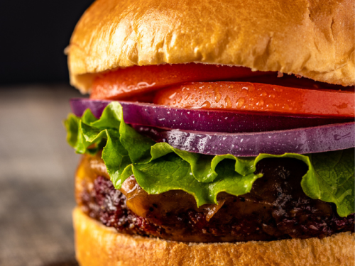

Hamburger Recipe

The end product!
This easy recipe will make for a fun activity for the whole family.
The best part is that you get to eat what you make!
Ingredients
- Hamburger buns
- Beef patties
- Aioli
- Lettuce
- Tomato
- Pickles
- Melty slices of cheddar cheese
- Ketchup
- Bacon
- Mustard
Steps:
- Cook your beef patties. You can do this in the oven or in the pan, your choice.
- Fry up your bacon until it's nice and crispy.
- Toast your buns - a George Foreman grill or panini press works nicely for this step, but even a regular toaster can work.
- Slather aioli onto your bottom buns.
- Slather mustard onto your top buns.
- Place the patties on the bottom buns, and then quickly place the cheddar cheese slices on the patties so they melt.
- Slather ketchup onto the cheese-covered patties.
- Place a lettuce leaf onto the pattie.
- Place a tomato slice onto the lettuce leaf.
- Place some pickles onto the tomato slice.
- Place some crispy bacon on top, then close the burger with the top bun.
- Enjoy your tasty meal!